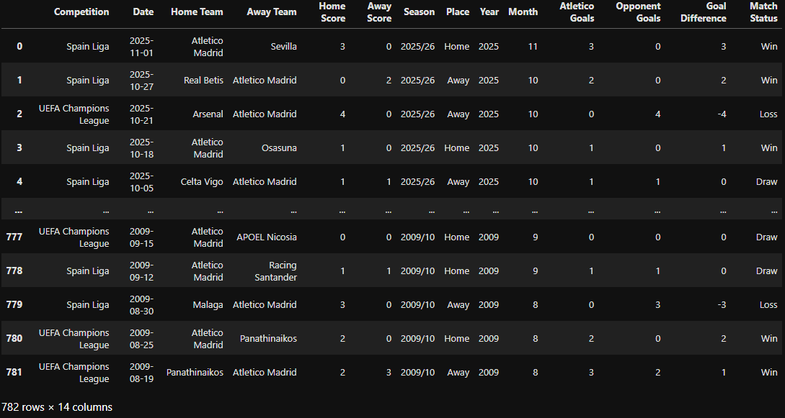
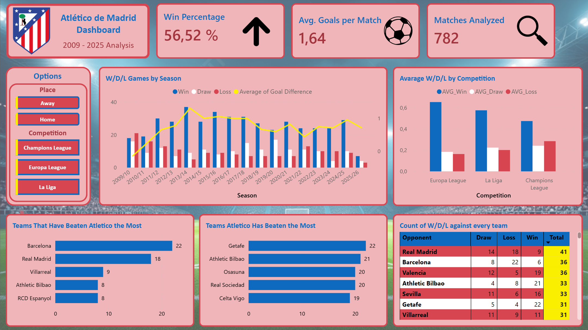
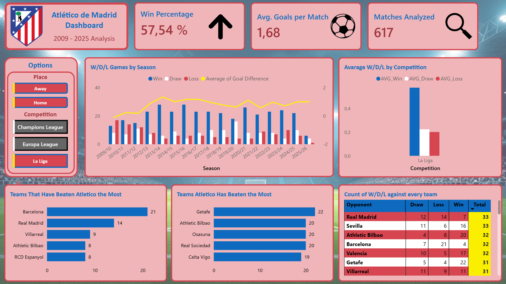

Atletico de Madrid Analysis
Match analysis from 2009/10 to Present day using Python, SQL and Power BI
For this analysis, I aimed to obtain all the available results for Atlético de Madrid. The maximum amount of data I was able to find was thanks to the Football Database website, which contained all the team's results from the 2009/2010 season up to the present day. My objective for this project is divided into two main parts:
Firstly, I wanted to utilize data analysis tools to continue developing and improving my skills in the sector. I used Python to extract the information from the webpage (web scraping), and thanks to Pandas, I was able to load all that information into a structured table and perform data cleaning. Once the table was clean, I used SQL to perform queries and obtain smaller tables with information that was easier to understand and from which valuable conclusions could be drawn. Finally, I chose to use PowerBI to give the analysis a visual touch and make the processed data quicker and simpler to comprehend.
Secondly, I wanted to take advantage of this project to answer questions that, as a lifelong Atlético supporter, I was genuinely curious about. Some of these questions included the number of wins, draws, and losses in each season, in which season the team attacked or defended better, which teams we tend to beat most frequently, or the impact Diego Pablo Simeone has had on the club.
All these questions will be answered throughout the different sections of this page, alongside more technical explanations regarding the data retrieval and analysis process.
Web Scraping
The first step was to transfer every Atletico result from the Football Database website into a data table so it could be analyzed in later steps. To achieve this, I used the requests and BeautifulSoup libraries in Python. The results table on Football Database was divided into 16 distinct pages, which meant the code had to navigate through each one. First, I obtained the link for each page and stored them in a list to then iterate over in a loop. I was able to extract these links from the page navigation bar buttons.
#Get every link from the navigation buttons panel
links_bar = soups[0].find("ul", class_="pagination pagination-sm")
link_buttons = links_bar.find_all('li')
#Create a list with every url termination
links = [link.find('a')['href'] for link in link_buttons]
Once I had the links, I fetched the HTML code for each of those pages and stored the code in another list.
#Loop through every url termination (Starts at 1 because the first was already appended)
for link in links[1:]:
#Determine the new url
url = base_url + link
#Requests the current url
page = requests.get(url)
#Append to the previoulsy requested pages
soups.append(BeautifulSoup(page.content, "html.parser"))
Before starting to obtain the individual results, I used the first table on the first page to get the column titles to create my new Pandas Data Frame. I extracted these column titles from the first row of the table where they were indicated.Once the Data Frame was created with its titles, I looped through the previously obtained HTML codes to access the results table on each page. I traversed all the tables from all the pages, and having previously analyzed their structure, I knew how they were constructed to extract the following data points: Home Team, Away Team, Result, Season, and Competition.
data_index = 0
for result_table in results_tables:
results = result_table.find_all('div', class_ = "club-gamelist-match")
for result in results[1:]:
result_data = [data.get_text() for data in result.find_all('a', class_="club-gamelist-match-info")]
for data in result.find_all('div'):
result_data.append(data.get_text())
df.loc[data_index] = result_data
data_index += 1
Thanks to this entire process, I obtained my complete Data Frame, which would subsequently need to be cleaned and expanded.
Data Cleaning process
Once I had the data, it was time to start the cleaning process. First of all, I standardized the entries in the table.
For example, in the 'Competition' column, instead of having many different entries like: 'SpainLiga2020/21', 'SpainLiga2021/22', etc. I wanted to have just the name of each competition. So, I standardized that column to include only: 'Spain Liga', 'UEFA Champions League' and 'UEFA Europa League'.
#Standarize Competitions to be the same name regardless the Season
#Define conditions
conditions = [
df["Competition"].str.contains("Spain Liga BBVA", na=False),
df["Competition"].str.contains("UEFA Champions League", na=False),
df["Competition"].str.contains("UEFA Europa League", na=False),
df["Competition"].str.contains("FIFA Club World Cup", na=False),
df["Competition"].str.contains("UEFA Super Cup", na=False)
]
#Define the names I want for the competitions
choices = [
"Spain Liga",
"UEFA Champions League",
"UEFA Europa League",
"FIFA Club World Cup",
"UEFA Super Cup"
]
#Make the change
df["Competition"] = np.select(conditions, choices, default = "Other")
Another example was the 'Date' field. The current format of the date was a string, so I converted it to a proper Date/Time format. This makes it much easier to analyze and filter by date later on.
#Set the Date column to date format (dd MM YYYY) df["Date"] = pd.to_datetime(df["Date"], format = '%d %B %Y')The other main thing I did in this step was to engineer new columns based on existing ones to provide more data for analysis. A key example was the match result. Initially, it was consolidated in one column like '3-0', '2-1', '5-2', etc., which wasn't useful for direct analysis. Therefore, I expanded that single column into two: one for the Home Team Score and the other for the Away Team Score.
#Split Score column to HomeScore and AwayScore
df[["Home Score_Str", "Away Score_Str"]] = df["Score"].str.split('-', expand = True)
#Set Home Score_Str and Away Score_Str to Ints
df["Home Score"] = df["Home Score_Str"].astype(int)
df["Away Score"] = df["Away Score_Str"].astype(int)
#Drop Score, Home Score_Str and Away Score_Str columns
df.drop(columns = ["Score", "Home Score_Str", "Away Score_Str"], inplace = True)
After this process, I ended up with a clean and more complete table that looked like this: With this refined table, I was able to export it to SQL so I could start creating interesting queries to answer some of my research questions.
SQL Queries
In this step, I exported the processed table into MySQL. My goal here was to create different queries to view the data I scraped in a more clear and valuable way.Some expamples of the queries I did are the following ones:
It is commonly said that Atlético de Madrid does not score many goals, so the first thing I did in SQL was to query the number of goals scored per season for comparative analysis.
/*Get the total count of goals per season and order it from more to less*/ SELECT SUM(Atletico_Goals) as TotalGoals, Season FROM results GROUP BY Season ORDER BY TotalGoals DESC;Following that, I calculated the average number of goals scored per match, as I considered this metric to be more insightful than the raw number of total goals scored.
/*Calculate the Goal Average per Season*/ SELECT AVG(Atletico_Goals) AS Avarage_Goals, Season FROM results GROUP BY Season ORDER BY Avarage_Goals DESC;Another important metric I wanted to check was the total number of goals conceded (goals against) by Atlético. This value makes it easy to assess the quality of the team's defense over the seasons.
/*Goals Against Atletico de Madrid*/
SELECT SUM(Opponent_Goals) AS Goals_Against,
CASE
WHEN Home_Team = "Atletico Madrid" THEN Away_Team
ELSE Home_Team
END AS Opponent
FROM results
GROUP BY Opponent
ORDER BY Goals_Against DESC, Opponent DESC;
A further relevant query I performed was calculating the average results both before and after the arrival of Diego Pablo Simeone to truly gauge the impact he had on the team's performance.
/*Avarage results Before and After Simeone*/
SELECT
CASE
WHEN results.Date > '2011-12-1' THEN "After Simeone" ELSE "Before Simeone" /*Simeone started in Atletico at 1st December 2011*/
END AS Simeone,
COUNT(*) AS Total_Matches,
CAST(SUM(CASE WHEN Match_Status = 'Win' THEN 1 ELSE 0 END) AS FLOAT) * 100 / COUNT(*) AS Win_Percentage,
CAST(SUM(CASE WHEN Match_Status = 'Draw' THEN 1 ELSE 0 END) AS FLOAT) * 100 / COUNT(*) AS Draw_Percentage,
CAST(SUM(CASE WHEN Match_Status = 'Loss' THEN 1 ELSE 0 END) AS FLOAT) * 100 / COUNT(*) AS Loss_Percentage
FROM results
GROUP BY Simeone;
Other relevant queries were executed as well and can be seen in this project's GitHub repository (The button is at the bottom of this page).
Each query provided great insights and conclusions that will be presented in the 'Conclusion' section.Nevertheless, the results from these queries led me to PowerBI so I could create visual representations, making those findings quicker and easier to understand.
PowerBI Visualization
Once I had executed all the queries in SQL, it was time to create the PowerBI project to transform all the results and conclusions from the SQL tables into visualizations.
The way I managed my PowerBI project was by creating just one page so the user can view the information all at once. This technique is commonly known as a 'One-Pager' Dashboard.
At the top area of the page, you can see the title and some key performance indicators (KPIs) displayed in large cards (e.g., Win Percentage, Average Goals Scored, and the Total Number of Analyzed Games).
Across the middle area, you can find interactive slicers (buttons) to filter the data shown on the page. These slicers allow the user to filter the data by Competition (La Liga, Champions League, Europa League) and by Match Location (Atlético's Stadium or Away).
To the right, a clustered column chart is displayed with three bars per section. Each section represents a season (from 2009 until today), and each bar represents the total count of wins, draws and losses. Overlaid on this chart is a yellow line that represents the average goal difference per match (Goals Scored minus Goals Conceded). To the far right of the middle section, another vertical column chart represents the average amount of wins, draws, and losses divided by Competition, making it easy to identify in which competition Atlético performs best.
Finally, at the bottom of the page, you can view information related to other teams. One horizontal bar chart represents the five teams that have beaten Atlético the most, the second chart represents the teams that have been beaten by Atlético the most and the final chart is a scrollable table where you can see every individual result of Atlético against that specific opponent.
Here you can see the final view of the project:

This view clearly showcases a lot of valuable information from the last 16 seasons of Atlético de Madrid.
As I said before, you can also manipulate that information (for example, to focus on a specific competition) thanks to the filters in the middle area.

With this final section, I believe I have covered all the important parts of a Data Analysis project, so let's jump into the conclusions section.
Conclusions
To conclude this project, I want to detail my findings across two distinct areas: the Technical Project Outcome and the Data-Driven Insights about Atlético de Madrid.
Technical Project Outcome
This project has been genuinely helpful for my professional development. I have learned a great deal through each of the project's phases, and I feel significantly more confident in my technical Data Analysis skills. In my opinion, being able to scrape data from a web source, clean and transform that data, analyze it efficiently with SQL, and finally represent those metrics visually in PowerBI demonstrates a foundational understanding of the Data Analytics workflow. I look forward to continuing this learning journey and investigating with more near-future projects.
Data-Driven Insights
As a lifelong Atlético de Madrid supporter, I aimed to be as objective as possible and base my findings strictly on the obtained data.
The analysis confirms that Atlético de Madrid is a formidable football club; while perhaps not in the global top 5, it is undoubtedly an important team in the European landscape. The data clearly shows that Diego Pablo Simeone is one of the most important figures in the club's history. The column chart illustrating the total count of victories, draws and losses from 2009 to the present day was particularly revealing. One can clearly observe a fundamental shift in the team's results beginning in 2011, immediately following the arrival of "Cholo" Simeone.
Nevertheless, the data also highlights areas for improvement. The best performance metrics were recorded during the 2013/14 season, and the team has not consistently reached those levels since. While the stats have slightly declined, considering the constant competition against two of the greatest clubs of all time (Real Madrid and Barcelona), the overall results remain promising.
A key finding from the metrics is that defense is the most critical variable. The average goals scored per match remains relatively stable across seasons (with minor variations), while the average goals conceded is the element that primarily drags down the average goal difference. I observed a general upward trend in the goals conceded metric over recent seasons.
Recommendation: My data-driven recommendation for Atlético de Madrid would be to prioritize the recruitment of top-tier defenders. Strengthening the defensive line is crucial for the strategic shift the team appears to be attempting and will directly improve the average goal difference metric.
This concludes my first extended Data Analysis project. I am extremely satisfied with the knowledge and skills I have gained. I hope you found the analysis insightful. Thank you for reading. All project files, including the SQL queries, Python code, the PowerBI proyect and the Results Data Table, are available through the GitHub repository (by clicking the button below). I look forward to continued learning and investigating different kinds of data in my next project.